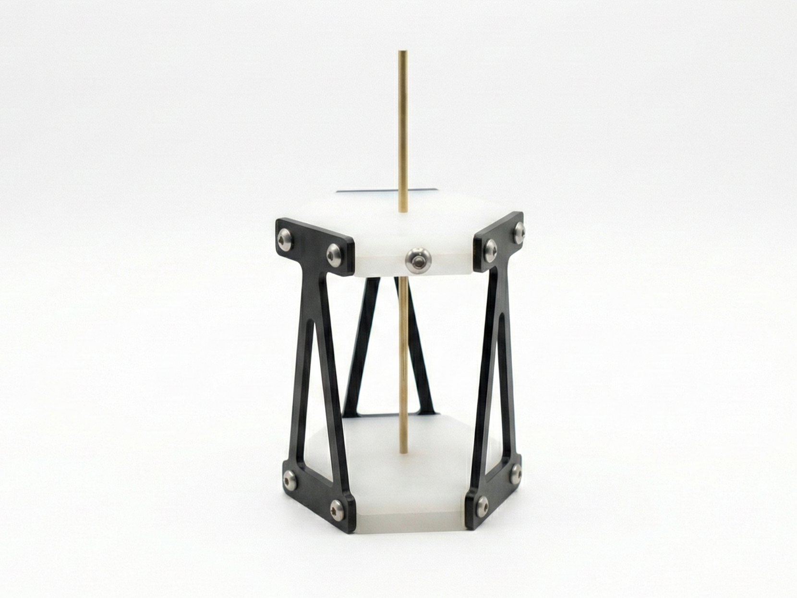
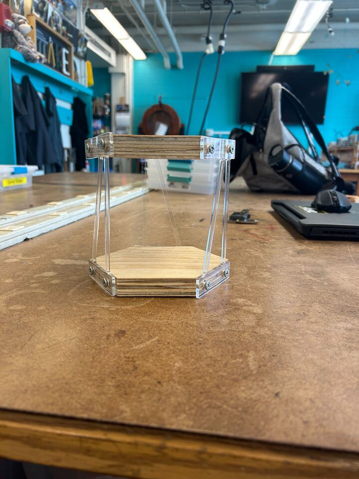
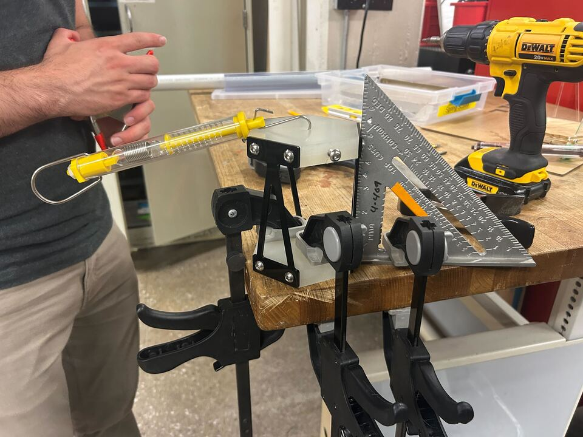
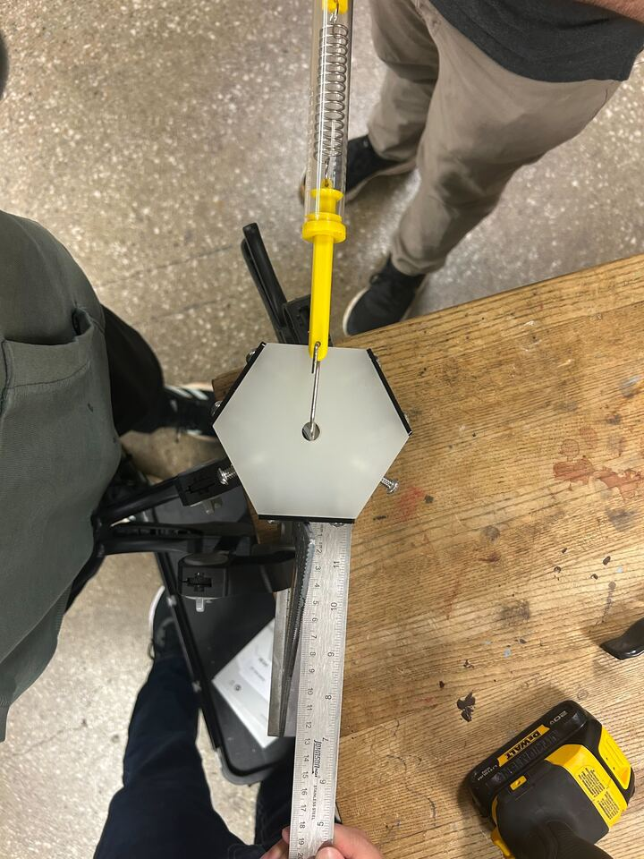
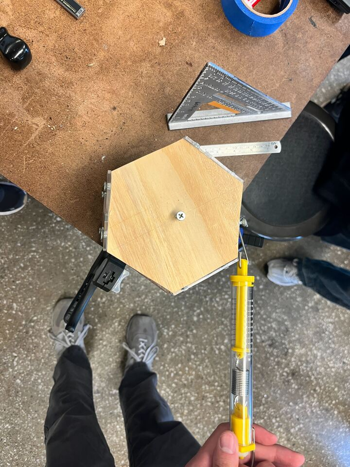

selected project
Optic Mount
Precision mechanical design — Satellite thermal and load isolation

The Challenge
In satellites, temperature differences between fully constrained parts may be large enough so that they exert forces between them that cause damage or impair function. Use flexures to form interfaces that (a) ensure 6 DOF are defined between them, (b) preclude surpassing stress limits within them, and (c) keep them centered during isotropic thermal growth (no temperature gradients).
The Design
The Process




Reflection
1/5 compliant mechanism designs. I will come to learn that this was the easiest one...
← Return to My Projects